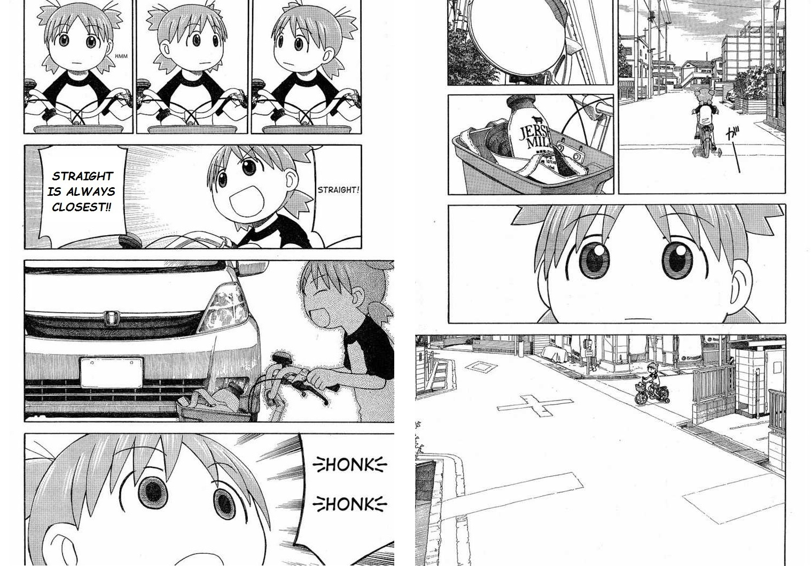

Topology
Set theory basics
Section of the positive integers
Definition. Define a section $S_n$ of the positive integers to be the set of positive integers less than $n:$ $$S_n = \left\{ 1, \ldots, n - 1 \right\}.$$ E.g. $S_1 = \0.$
Principle of Recursive Definition
Theorem. Let $A$ be a set, $a_0$ an element of $A.$ Suppose $\r$ is a function that assigns, to each function $f$ mapping a nonempty section of the positive integers into $A,$ an element of $A.$ Then there exists a unique function $$h: \ZZ_+ \longrightarrow A$$ such that \begin{align*} h(1) &= a_0 \\ h(i) &= \r(h|S_i) \quad\text{ for }\quad i > 1. \end{align*}
In plain English, $h$ is defined recursively by the rule $\r$ and $h$'s previous values.
Axiom of Choice
Axiom of Choice. Given a collection $\AA$ of disjoint nonempty sets, there is a set $C$ consisting of exactly one element from each element $A \in \AA,$ i.e. a set $C$ s.t. $$C \subset \Cup_{A \in \AA} A,$$ and for each $A \in \AA,$ $$ C \cap A = \text{a singleton set.}$$
Lets you make infinitely many choices.
Well ordered sets
Definition. A set $A$ with a relation $<$ is said to be well ordered if every nonempty subset of $A$ has a smallest element.
E.g. $\NN$ and $\NN_0$ are well ordered but $\ZZ, \RR, \RR_+,$ and $\RR_0$ are not, under the natural ordering.
E.g. $\NN^\o = \Times_{i=1}^\infty \NN = \NN \times \NN \times \cdots$ is not well ordered under dictionary order.
Theorem. If $A$ and $B$ are well ordered, then $A \times B$ is well ordered in the dictionary order.
Well ordering theorem
Well ordering theorem. Every set has a well ordering relation.
Corollary. There exists an uncountable well ordered set.
Corollary. Every set has a total ordering.
Wait, this means every set can be put on a line. What about all those sets bigger than $\RR?$ What is going on here? Well, I don't know enough about all this so let's leave it alone for the time being. Bread and butter!
Section of a set
Definition. Let $X$ be a well ordered set and $\a \in X.$ The set $$S_\a = \left\{ x \in X : x < \a \right\}$$ is called an $\a$-section of $X.$
Similar to an $n$-section $S_n$ of the positive integers.
Least upper bound property
Definition. An ordered set $A$ is said to have the least upper bound property if every nonempty subset of $A$ that is bounded above has a least upper bound. Similarly for greatest lower bound.
Proposition. $A$ has the lub property iff it has the glb property.
Well order and least upper bound
Proposition. Every well ordered set has the least upper bound property.
Proof. Let $A$ be a well ordered set, and let nonempty $B \subset A$ have an upper bound in $A.$ Then the set $C$ of upper bounds of $B$ is nonempty and has a least element, by well ordering of $A.$ \qed
Proposition. In a well ordered set, every element except the largest---if one exists---has an immediate successor.
Proof. Let $A$ be well ordered and $x \in A$ be not the largest element. Then the set of elements greater than $x$ is nonempty and by well ordering has a least element, which is the immediate successor to $x.$ \qed
Nonexample. The converse isn't true, e.g. every integer in $\ZZ$ has an immediate successor but $\ZZ$ is not well ordered.
Question. Can an element in a well ordered set have more than one immediate successor?
No, cause a well ordering has to first be a total (linear) order. So that means when we say every subset of a well ordered set has a least element, what we really mean is that it's the least element (in that subset).
Topological spaces and continuous functions
Reference
- Topology by Munkres.
- Everything else from the web.